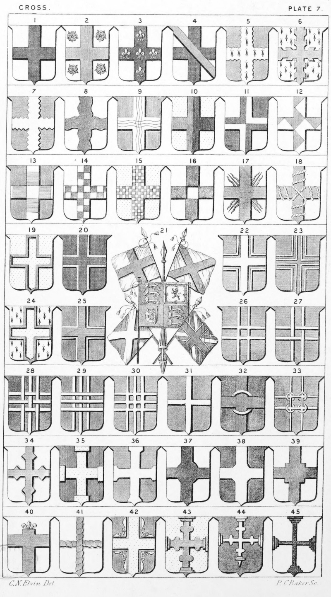

Plate 7.

Plate 7.
- Cross. Ar. a Cross sa.
- Cross between four Roses
- Cross On a Cross five fleur-de-lis
- Cross Cross surmounted by a Bendlet
- Cross engrailed. Per pale az. and gu. over all a cross engr. erm.
- Cross raguly or raguled
- Cross indented
- Cross wavy, or undee
- Cross watery, or a plain cross waved per-pale
- Cross counter-quartered, or quarterly- quartered, or quarterly a cross countercharged
- Cross point in point
- Cross gobony, or componee
- Cross counter componee, or counter gobony
- Cross chequy
- Cross quarter-pierced
- Cross rayonnated, or rayonnant
- Cross corded
- Cross clechee, recourse, or recoursie
- Cross voided, also termed sarcelle.
- Cross Gu. a cross or voided of the field
- The Royal Banner, ditto of St. George, St. Andrew, and St. Patrick. The "Union Jack" or National Banner, this flag is blue, bearing the Red Cross of St. George, the Saltire, or White Cross of St. Andrew, and the Red Saltire, or Cross of St. Patrick, combined
- Cross recercelled of another, also blazoned cottised
- Cross double voided, also termed voided sarcelled
- Cross fimbriated, or bordered
- Cross surmounted of another
- Cross double-parted
- Cross double-parted and fretted
- Cross triparted and fretted
- Cross of three endorses surmounted of as many barrulets
- Cross treble-parted
- Cross fillet
- Cross fretted with an annulet. The arms of Crusamell
- Cross double-parted fretted with four annulets
- Cross lozengy-nowed, or lozengée-nowed
- Cross degraded
- Cross pattee fixed, double-rebated
- Cross nowy
- Cross nowy-lozengy
- Cross nowy-quadrat
- Cross couped, at the top and flurt
- Cross cable, or cablee
- Cross cottised with eight demi fleur-de-lis, properly a cross recercelled with eight demi fleur-de-lis, their bottoms towards the fesse point conjoined
- Cross nowed grady fixed
- Cross nowed grady conjoined fitchee
- Cross degraded and conjoined, or issuing from twelve degrees